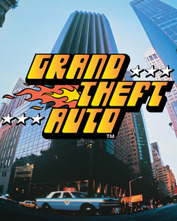
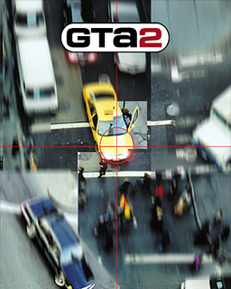
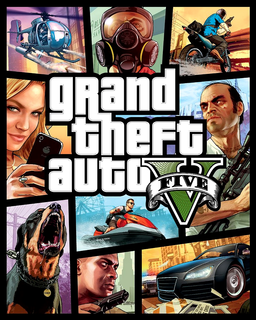
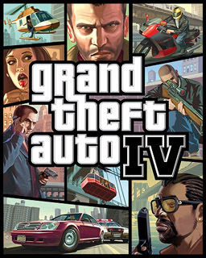

Grand Theft Auto er tölvuleikjasería og allir leikirnir eru open world action-adventure og þeir hafa komið út á margar mismunandi leikjatölvur (Playstation, Xbox og PC). Leikurinn fjallar hins vegar um það að spilendurnir hafa mörg vopn þ.a.e.s byssur og hnífa, og nota þeir þau til að drepa, ræna og fleira.
Fyrsti leikurinn var framleiddur af DMA Design (David Jones og Mike Dailly) en var fyrst gefinn út af BMG active í Október árið 1997. Tveimur mánuðum seinna var hann endurgefinn út í Evrópu en svo í júní árið 1998 í Norður Ameríku fyrir Playstation. Sjá einnig framleiðendur á hinum leikunum hérna.
Samkvæmt umræðum á netinu byrjuðu margir að spila leikina í kringum 8 til 12 ára aldur en spila leikina ennþá eftir mörg ár. Það eru þó nokrrir sem eru í kringum 40 ára aldur sem spila leikinn, en flestir eru líklega í kringum 8-25 ára og megnið af þeim menn. Þeir sem spila leikinn hafa líklega áhuga á Open-World Action tölvuleikjum.
1. Grand Theft Auto
DMA Design gáfu úr fyrsta leikinn árið 1997.
2. Grand Theft Auto II
DMA Design gáfu út annan leikinn árið 1999.
3. Grand Theft Auto III
DMA Design gáfu út þriðja leikinn árið 1999.
4. Grand Theft Auto IV
Rockstar North tóku svo við DMA Design og gáfu út fjórða leikinn árið 2008.
5. Grand Theft Auto V
Svo gáfu Rockstar North út fimmta og nýjasta leikinn árið 2013.
Þróun allra helstu leikjanna í myndbandi.
Framtíðarhorfur leikjaseríunnar eru bjartar. GTA V er í top 4 mest seldu leikjum allra tíma og hann er ennþá mjög mikið spilaður víða á heimsvísu. Rockstar Games munu halda áfram að framleiða leikinn og eru því að vinna í sjötta leiknum.